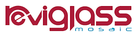

Nouveauté 2026 · 2,5 × 2,5 cm
MIDAS
L’éclat de l’or, l’élégance du verre. Une mosaïque dorée pour les piscines et la décoration.
Découvrir la collection LE ROY
LE ROY
Retrouvons-nous à Eurexpo pour découvrir les mosaïques MIDAS et S-TONES, échanger sur vos projets de piscine et partager un moment ensemble.
Deux collections à découvrir sur le stand et dès maintenant dans notre sélection mosaïque.
L’éclat de l’or, l’élégance du verre. Une mosaïque dorée pour les piscines et la décoration.
Découvrir la collection
Le verre s’inspire de la pierre naturelle. Six nuances, une finition mate et texturée.
Découvrir la collection
Sur le stand Reviglass, retrouvez l’équipe LE ROY FACTORY pour découvrir les matières, observer les nuances et échanger autour des solutions adaptées à vos projets de piscine.
Explorer la sélection mosaïqueLE ROY FACTORY et Reviglass vous accueillent.
Entrée gratuite sur inscription, réservée aux professionnels.
Du 17 au 20 novembre · Hall 4, stand D74.